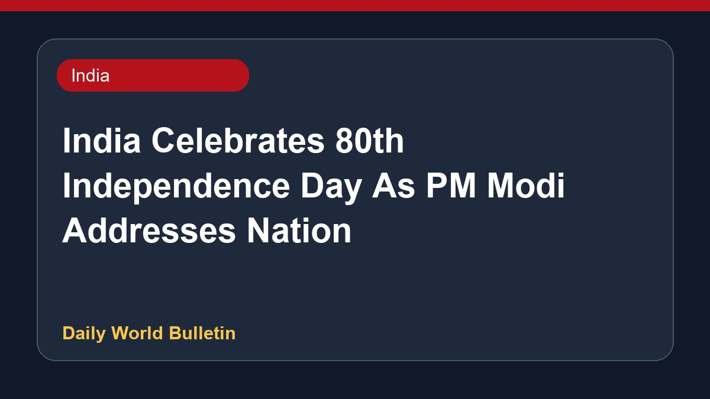

India Celebrates 80th Independence Day As PM Modi Addresses Nation

India is celebrating its 80th Independence Day, with Prime Minister Narendra Modi set to address the nation from the ramparts of the Red Fort. As part of the grand celebrations, the patriotic tune Vande Mataram was played for the first time during the Red Fort ceremony. Citizens across the country are exchanging greetings, wishes, and messages. Meanwhile, media outlets are highlighting various aspects of the historic day, including a retrospective look at the Prime Minister's traditional turbans worn during past national addresses.
Original source: India News Sources
India Ushers In 80th Independence Day, PM Modi To Address Nation From Red Fort - ndtv.com ↗
India Ushers In 80th Independence Day, PM Modi To Address Nation From Red Fort - ndtv.com ↗